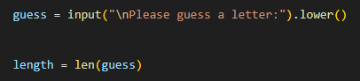
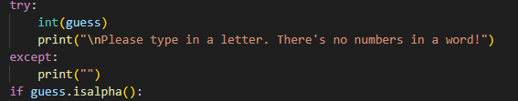
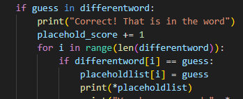
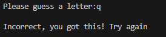
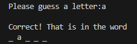
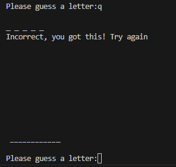
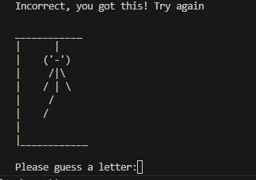
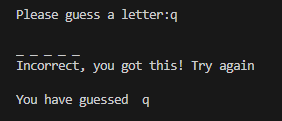
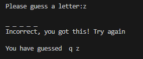
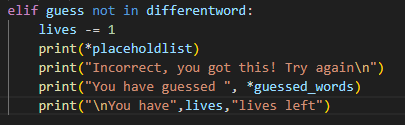

1. Game Process(guessing function)




In this task, I have been working on the guess function in the game. This includes making sure the guess is one letter, is actually a letter, and if the letter has already been guessed. This does not include correct/incorrect guesses.
| Input | Expectation | Output |
|---|---|---|
| N/A | This input is to check if the while loop works and tells the player to guess again. |

It works accordingly. |
| jk | This input is to check if the while loop and the if statement works when guessing more than one letter. |

If statement works accordingly and loops around. |
| *space* | Because of the way I have coded this, a single space is able to go past the code because it is being recognised as 1 character. I put a separate code so that 1 character is able to go by. This is to check that a single space can be blocked out of leaving the line of code. |
Works accordingly.
|
| 1 | By using an if statement, it should loop back, saying that there are no numbers in the word. | I do not have a screenshot to show the results, but the code broke when typing in a string/letter. The integer input worked, except at the cost of the whole code |
| "1" and "a" | Instead of using an if statement, I am now using try and except to check if it is an integer. Through try and except being able to continue without breaking, it should work and repeat the loop. |
Though it works as intended, it went through all if statements and was included in the list 
Works accordingly. |
| "1" and "a" | This is the same input, but I've looked up a line of code: isalpha(). This checks if the input is in the alphabet. I was stuck on the implementation of integers in the list, so I looked up isalpha to fix the code. I expect after typing in "1", it shouldn't break because of try and except and it will not add the 1 into the list. After entering in "a", it should add it to the list and repeat the question. |

Works accordingly(surprisingly) |
| "j" and "j" | After checking every possible input, I realised that my elif statement checking if the guessed letter is in the list is at the bottom, meaning it has less priority. For this, I moved it up even into another if statement to make sure there is not repitition. |

Works accordingly(though looks messy) |
"I would add pictures. There was no listing of the letters that I had already used. But when I used the same letter, I could see the letters I had already used. It doesn't count down the number of guess remaining."
"Although I knew the word after a few guesses and I put in the whole word, it says that I can only guess one letter at a time. Maybe you could try and guess more letters. I'm sure children would also want to guess more than one letter at a time."
"Yes. Good functionality"
"Aside from not being able to guess more than one letter, I think I could easily use the game. I haven't tried putting in numbers, symbols or emoji's. Maybe if you could try and single out one letter and one letter only, that would be a good thing - especially with an audience of children."
"It doesn't count down the number of guesses remaining."
"You'd definitely have to space out some of the lines - it does seem unstable."
There are numerous improvements I did to the hangman game from the feedback I got. From the feedback, I saw that the players could not see their guessed letters, what the word was in the end and their actual chances left before failure.
In terms of improving everything my feedback mentions, I have done some things and missed out on others. Although we have a miniture picture of a hangman in the game, we cannot add pictures to the game. This is becuase of my ability to code pictures in, and is generally unrelated to the hangman game. Additionally because of the feedback given, I had added both a lives left counter and a list of all the guess words. This was to ensure players aren't confused with what letters they've used and what they haven't used. Additionally, I spaced out not only the guessing functions, but most of the games clustered sentences. An example can be the losing message being too clustered.
In terms of adding in additional lines of code to accomodate multiple lettered guesses, it would be challenging as a new learner to get past certain if or elif statements. Additionally, single lettered guesses promote authenticity - having true results and true wins for players actually trying to win. Adding in a line of code that bypasses multiple letter guesses can deminish the game if they were to guess the whole alphabet with one guess. This line of code promote validity and true results when playing.
Note: \n are new lines - this meaning spacing within sentences
Although these are improvements relating to the guessing function of the hangman game, these are mostly related to my next process in which is mentioned below - displaying guessed letters, filler letters, the hangman drawing and the correct letters in the correct order. My peers giving me feedback had not known the specific function we're guessing(my parents), but has still mentioned obvious improvements that have been resolved.
In this task, I'm working on displaying guessed letters, filler letters, the hangman drawing, and correct guesses in correct order. This includes implementing correct and incorrect guesses, adding lists, and using i in range. My other peers in my group have already drawn out the hangman stages and the losing and winning messages - my responsibility is the tying of these three functions and other placements. This task includes multiple changes and challenges.
| Input | Expectation | Output |
|---|---|---|
| a | This input is to see if the if statement works: if guess in differentword. This line of code states that if the guessed letter is in the word of hangman - afterwhich it should display appreciation for their correct guess. |
It works accordingly. |
| q |
This input is to check if the elif statement is working. This elif statements says that if the guess is not in the word, it'll do the indented lines of code. It should say that it is incorrect.

|

If statement works accordingly and tells them that they're incorrect. |
| a |
For this test, I'll be testing if the filler words work and the correct letter is in the correct spot. I used Google and had Medy to help me with this particular line of code. What I understand of the code is that: for 5 times(going down 4, 3, 2, 1, 0), it will check if guess is correct. If guess is correct in atleast one spot, it will set placeholdlist(which is a list of "_") to that set number and set that particular underscore in the list to that guessed letter.
Afterwhich it will print the whole of placeholdlist.
There were many problems and challenges within making this particular part of the code, at some times I replaced for i range(5) with 5 separate variables set to if statements if the guess one of the 5 variables. With Medy and online help, I was able to use this code. This was added onto if guess in differentword. |
 Works accordingly - surprisingly. |
| q | This input is to ensure the hangman drawing is displayed when the player inputs in an incorrect guess. Arlo - another peer from my group - had already done the hangman drawings using if statements and underscores. I simply indented the lines of code into the while lives > 0 loop(not the forever while True loop). This should comply with the incorrect guess and display accordingly. |  Works accordingly - the line of underscores are the first steps to the hangman drawing and will develop as the player guesses incorrectly.  |
| 'q' and 'z' | This input is to ensure the reliability of showing what the player has guessed. In this instance, the test is to input 'q', and see the incorrect function display that I've guessed q. After inputing in q, I will input z - this is to ensure that the code remembers 'q' as an input and 'z' as an input, displaying those letters as used guesses. |   Works accordingly. |
| "q" and "z" | This input is in compliance with the previous feedback on displaying the chances the player has left. After this incorrect input, it should output that the player has 9, 8, 7, 6... lives left  Note: the "lives" variable is equal to 10 |
Works accordingly |
"Remember equal or reasonable spacing."
"Yes, I do think the layout was easy on the eyes. I'm not really sure what else to change in the layout of the guesses."
"The guessing function of what I have already guessed seems plain - it does impair on actually looking at what letters I haven't used. It compromises me playing the game to my full ability basically."
"Not really about what I don't like, but more like I think there should be more done to the vocabulary or the engagement to the players."
For my improvements when keeping in mind the feedback that I've been given, I have first implemented more in the vocabulary around the game. When incorrect guesses are made, I made a simple hint for using vowels first. Additionally, I have implemented and imporved more sentences in the game process function - ensuring better engagement with the players, especially our end-users. In terms of the spacing around the game, I have implemented new lines respectively around the whole game, including the starting and ending functions.
An additional critique mentioned in the feedback I was given was the lack of appreciation for displaying the guessed letters. It was stated that the bundled letters impaired the enjoyability and usability of the game, and compromised their ability to play the game. For acting upon this specific feedback, I looked up a way to somewhat organise the list of letters into atleast a grammatically correct sentence. ", ".join() was the function I found that simply joined a comma to each of the values in the list. This is a simple way I tried to implement usability and aesthetics into displaying the guessed letters.

The old variable is now replaced with the listed guesses with commas - variable name is displayed_guesses
Have also implemented hints/additional messages.